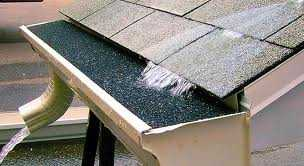
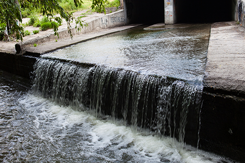
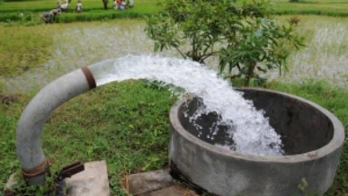

free2O provides affordable water-harvesting projects
Choose one of the following harvesting plans:
Roof-top

Simple and effective way to meet the daily household water demands. Easy installation but less capacity.
₹8000
Surface-runoff
Mostly suited for agricultural purposes. Excess water after rain gets stored in the reservoir.
₹10,000
Bore-Well
It is suitable for industrial use or when the there is a demand for large amounts of water. Has higher capacity.
₹20,000